¿Demasiados conceptos? 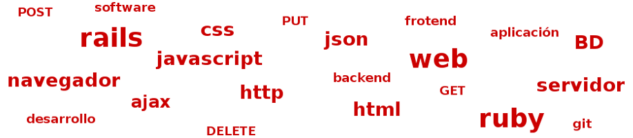
Front-end y Back-end
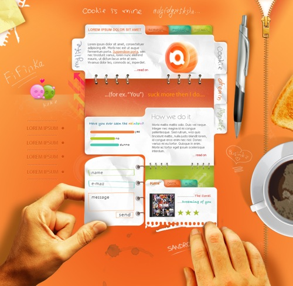Front-end
Parte de la web que podemos ver y con la que se puede interactuar.
Backend-end
Lógica
Parte encargada de procesar la información y almacenarla.
Base de datos
"Almacén" de información
Infraestructura
Servidor web.
Bentobox
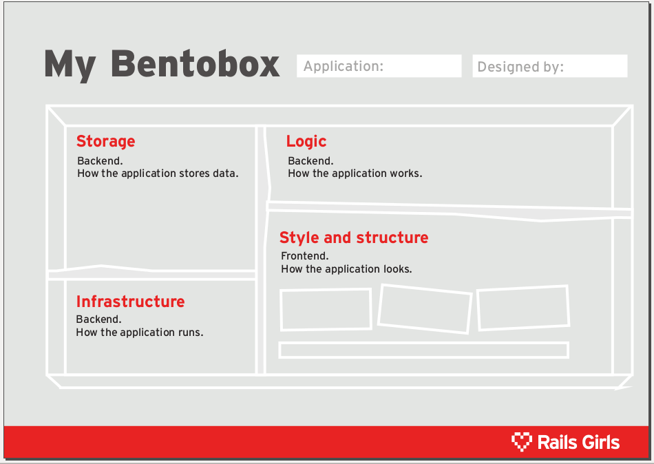Bentobox - Ejercicio
PHP
SaaS
RoR
HTML
MongoDB
Apache
CSS
Django
MySQL
Nginx
¡¡ 5 minutos !!
Bentobox - Solución
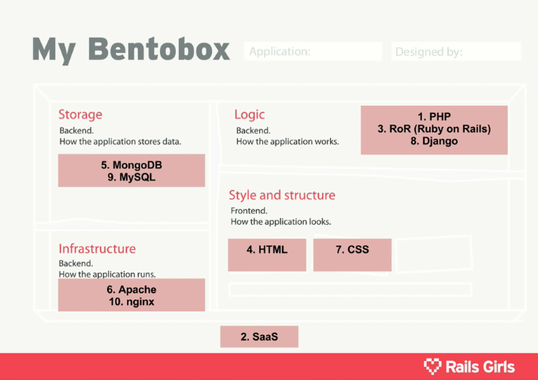Bentobox - Solución
PHP
Lógica. Lenguaje de programación.SaaS
Modelo de negocio. Software as a Service.RoR
Lógica. Ruby on Rails. Framework.HTML
Estilo y estructura. Lenguaje de marcado.MongoDB
Base de datos. NoSQL. Orientado a documentos, JSON (BSON)
Apache
Infraestructura. Software de servidor de código abierto.CSS
Estilo y estructura. Define la apariencia de la web.Django
Lógica. Framework. Equivalente a Rails para Python.MySQL
Base de datos. Sistema de base de datos de código abierto.Nginx
Infraestructura. Software de servidor de código abierto.
Otros lenguajes y tecnologías de Front-end y Back-end
Front-end
Diseño, HTML, CSS, JavaScript, fuentes, botones, formularios...
Backend-end
Lógica
Ruby, RoR, Python, Django, PHP, ...
Base de datos
PostgreSQL, MySQL, SQLite, ...
Infraestructura
Apache, Nginx, IIS, ...
¡Manos a la obra!
¿Qué necesitamos para empezar?
-
Ordenador
Con el entorno ya instalado, en este caso, la máquina virtual.
-
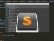
Editor de Texto
Sublime Text, Vim, Emacs y Gedit son ejemplos de editores de texto que se pueden usar para escribir código y editar ficheros.
-
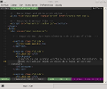
Terminal
Donde se inicia el servidor de Rails y se ejecutan los comandos.
-
Navegador web
(Firefox, Safari, Chrome) para visualizar la aplicación.
Aplicación «Ideas»
- Empezaremos por algo fácil e iremos aumentando la complejidad.
- Aplicación donde podamos anotar nuestras ideas y asociarles imágenes.
- Una «idea» se compone de los campos «nombre», «descripción» e «imagen»:
- name: string
- description:text
- picture: string
- Mockups: balsamiq.com, gomockingbird.com 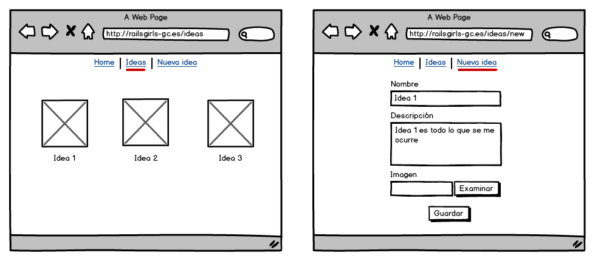
Crear una aplicación Rails
Lo primero que tenemos que hacer es crear una nueva aplicación
-
Abrimos el terminal y creamos un directorio para colocar nuestras aplicaciones:
-
Creamos la aplicación con el nombre «railsgirls»
Estructura de directorios de Rails
Esto es lo que ocurre:
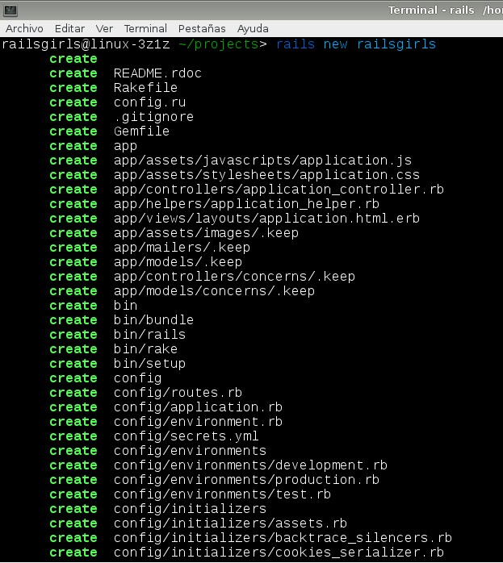Estructura de directorios de Rails
| Fichero/Directorio | Propósito |
|---|---|
app/ |
Contiene los controllers, models, views, helpers, mailers y assets de la aplicación. |
bin/ |
Contiene el script que inicia la aplicación y puede contener otros para configurar, desplegar o arrancar la aplicación. |
config/ |
Configura las reglas de ejecución de la aplicación, rutas, base de datos, locales, etc.. |
config.ru |
Configuración para servidores basados en Rack usados para iniciar la aplicación. |
db/ |
Contiene el esquema actual de la base de datos, así como las migraciones de la base de datos. |
Gemfile Gemfile.lock |
En estos ficheros se especifica qué dependencias de gemas son necesarias para la aplicación Rails. La gema Bundler hace uso de estos ficheros para instarlar las gemas en las versiones exactas que la aplicación necesita. |
lib/ |
Módulos extendidos para la aplicación. |
log/ |
Ficheros de Log de la aplicación. |
public/ |
La única carpeta vista por el mundo tal como es. Contiene los ficheros estáticos y assets compilados. |
Rakefile |
Este fichero localiza y carga tareas que pueden ser ejecutadas desde la línea de comandos. La lista de tareas son definidas a través de los componentes de Rails. |
README.rdoc |
Este es un breve manual de instrucciones para la aplicación: qué hace, cómo configurarla, etc. |
test/ |
Pruebas unitarias, fixtures y otras. |
tmp/ |
Ficheros temporales (como ficheros de caché, PID y ficheros de sesiones). |
vendor/ |
Lugar para código de terceros como librerías y plugins. |
Navega por los directorios y ficheros
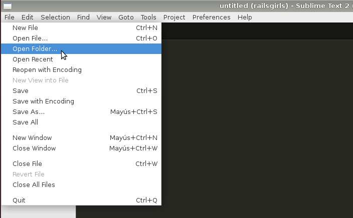- En el terminal:
$ ls$ cd
- En Sublime Text:
- Abrir directorio
~/projects/railsgirls
- Abrir directorio
Arrancamos el servidor en local
-
Entramos al directorio:
-
Ejecutamos el servidor en local (nuestro ordenador):
$ cd railsgirls $ bin/rails server => Booting WEBrick => Rails 4.2.0 application starting in development on http://localhost:3000 => Call with -d to detach => Ctrl-C to shutdown server [2013-08-07 02:00:01] INFO WEBrick 1.3.1 [2013-08-07 02:00:01] INFO ruby 2.0.0 (2013-06-27) [x86_64-darwin11.2.0] [2013-08-07 02:00:01] INFO WEBrick::HTTPServer#start: pid=69680 port=3000
Este simple comando lanza un pequelo servidor llamado WEBrick
Nuestro ordenador hace las veces tanto de cliente como de servidor
Arrancamos el servidor en local
- Vamos al navegador
-
Abrimos http://localhost:3000
Si vemos la página "Welcome aboard", todo ha ido bien.
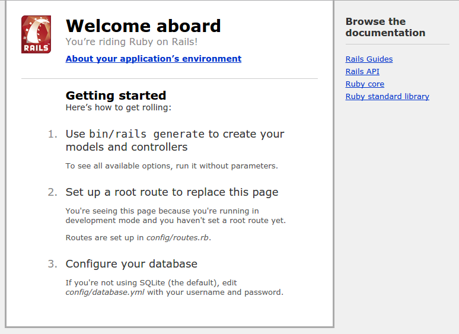 -
Pulsamos CTRL-C en la terminal para salir del servidor.
Comandos de Rails
| Comando | Propósito |
|---|---|
rails new app_name |
Crear una nueva aplicación Rails. |
rails server |
Arrancar el servidor. |
rails console |
Abre una consola para poder interactuar con Rails desde línes de comandos. Muy útil para probar pequeños trozos de código. |
rails generate |
Genera por nosotros un montón de ficheros y código según el tipo de generador usado. Ej. rails generate model o rails generate scaffold |
rails dbconsole |
Abre una interfaz con la que interactuar directamente con la base de datos. |
rails destroy |
Lo opuesto a «generate». Deshace lo que el «generate» había hecho. |
rails runner |
Permite ejecutar código Rails de manera no interactiva. |
rake |
Permite ejecutar tareas. Con rake --tasks se puede ver una lista de ellas. |
Podemos ejecutarlos con -h o --help para obtener más información
Control de versiones
- Crear un repositorio de git
git init

-
El repositorio local está consta de 3 "partes" administradas por Git:
-
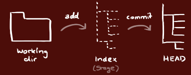
- Directorio de trabajo
- Index
- HEAD
- Registrar cambios (añadirlos al Index)
git «filename»git add .
- Hacer el commit (pasan al HEAD)
git commit -m "Mensaje del commit"
- Enviar los cambios (commits) al repositorio remoto
git push origin master
Pasamos a la magia...
/